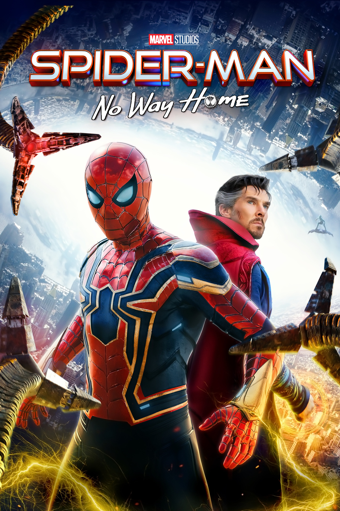

A live-action origin
Start with the 2002 film if you want to see Peter discover his powers and learn what it costs to use them responsibly.
Three live-action starting points follow Peter Parker. The animated Spider-Verse series starts with Miles Morales, a teenager figuring out how to become Spider-Man in his own way.
Compare the films
Each film opens a different series or screen version. Pick the hero and style you are most curious about.
| Film | Year | Lead Spider-Man |
|---|---|---|
| Spider-Man | 2002 | Peter Parker (Tobey Maguire) |
| The Amazing Spider-Man | 2012 | Peter Parker (Andrew Garfield) |
| Spider-Man: Homecoming | 2017 | Peter Parker (Tom Holland) |
| Spider-Man: Into the Spider-Verse | 2018 | Miles Morales (Shameik Moore) |
Start with the 2002 film if you want to see Peter discover his powers and learn what it costs to use them responsibly.
Pick Into the Spider-Verse for Miles’s first adventure. The animation uses comic-style lettering, textures and panel layouts as the story brings together Spider-People from different worlds.
No Way Home continues Tom Holland’s story after Far From Home. Its opening scene picks up immediately after Peter’s identity is revealed.